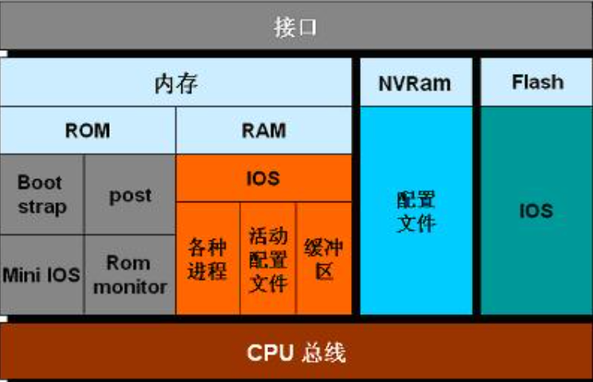
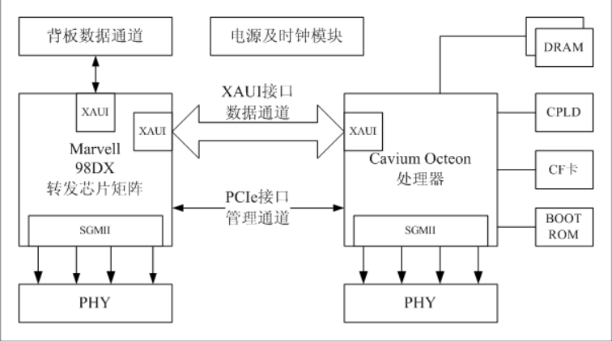
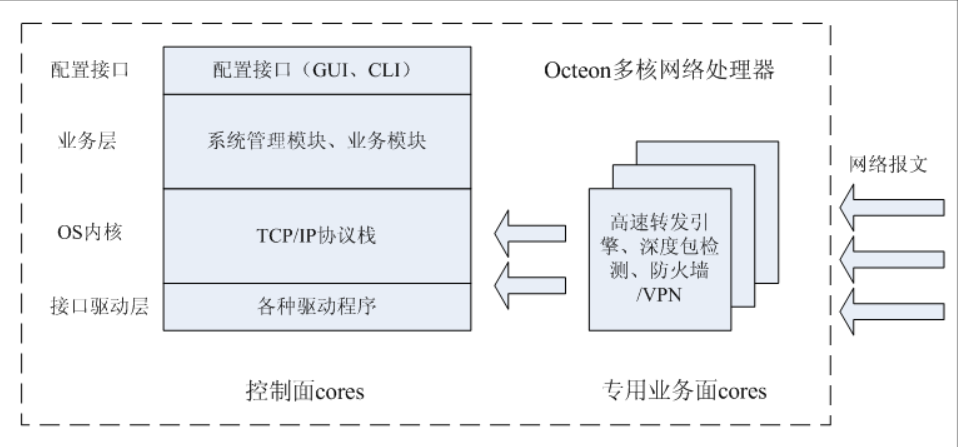

随着信息化发展，路由器肩负着数据交换重任，是现代通信网不可或缺的基石
路由器介绍
路由器作为ICT的一个最重要的基础设施，在在通信网络中扮演着十分重要的角色，从漂亮国打压菊厂的力度可见一斑。路由器作为网路设备， 处于OSI中的网络层，实现网路数据交换，他与交换机的区别主要是：交换机创造网络二路由器连接网络，路由器作为分发者，选择最优的路径传输数据，交换机（2层）工作在 数据链路层上，路由器则工作在网络层。路由器转发方式有进程转发、快速转发、优化转发、分布式转发，交换结构有共享内存型、总线型、cross-bar型。路由器的体系结构：路由器从单总线、单CPU结构发展到单总线、多CPU再到多总线多CPU，采用交叉开关方式。
厂商
下图是一些主要的路由器生产厂商，此外|腾达、水星、博达、迅捷、华硕等也是比较常见的生产厂商，华硕和博通合作，在消费者领域发展迅猛。这些厂商以华为技术较为雄厚，其企业高端交换机如CloudEngine 16816，交换容量最高可达2870Tbps，转包率460800Mpps；路由器NetEngine 8000 X8，交换容量750.69 Tbps，转包率172,800 Mpps。

架构
  硬件
| 模块 | 品牌 | 主要功能 |
|---|---|---|
| CPU（处理器） | 博通、高通、联发科、瑞昱、Ralink、Marvell、Ubicon | 对路由进程、路由算法、路由过滤、网络管理、配置管理、数据包转发等控制方面的处理 |
| 内存 | 金士顿、三星、美光、海力士 | 缓存 |
| flash | 金士顿、三星、美光、闪迪 | 存储路由器操作系统 |
| 无线芯片 | 博通、atheros、MTK、Lantiq | 无线管理芯片，收发无线信号 |
| 功放芯片 | skyworkks、Qorva、Qualcomm、Broadcom、Murata | 发送、接收高频信号 |
| Nvram | STM、Cypress Semiconductor、Maxim Integrated | 保存配置文件 |
| ROM | \ | POST、Boost Strap代码、Mini OS |
| 输入、出端口 | \ | 一般由线卡提供，链路层封装、解封装，数据包分类、SLIP、PPP协议 |
此外还有网络变压器、ASIC（交换芯片，一般用于高端产品）
固件
| 名称 | 开发者 | 开源协议 | 说明 |
|---|---|---|---|
| IOS | Cisco | 闭源 | 用于Cisco产品的商业软件 |
| OpenWrt | LEDE | GPL | 基于Linux，其他组件可能使用不同开源协议，插件丰富，支持硬件较多 |
| DD-WRT | BrainSlayer | GPL | 基于Linux，LinSys迫于压力开源WRT54G/GS固件发展而来 |
| Tomato | / | GPL | 基于Linux，有HyperWRT发展而来，简单易用 |
| Vyos | / | GPL | 基于debian开源的网络操作系统， |
| Asuswrt-merlin | Eric Sauvageau | GPL | 基于Asuswrt 二次开发 |
| Padavan | GPL | 基于华硕 RT-N56U 进行魔改，俗称华硕老毛子固件 |
协议
标准组织
| 名称 | 主要委员会 | 主要（标准）协议 |
|---|---|---|
| IEEE Institute of Electrical and Electronics Engineers 电气和电子工程师协会 面向电子电气工程、通讯、计算机工程、 计算机科学理论和原理研究的组织 www.ieee.org |
IEEE 754──浮点算法规范 IEEE 802──局域网及城域网 IEEE 802.11──无线网络 IEEE 802.16──无线寛频网络 IEEE 829──软件测试文书 IEEE 896──未来总线Futurebus IEEE 1003──POSIX IEEE 1076──VHDL（VHSIC硬件描述语言） IEEE 1149.1──JTAG IEEE 1275──Open Firmware IEEE 1284──并口 IEEE P1363──公钥密码 IEEE 1364——Verilog硬件描述语言 IEEE 1394──串行总线“火线” IEEE 1619──存储安全 IEEE 1901──PLC IEEE 12207──软件生命周期过程（IT） |
IEEE 802.1──高级接口High Level Interface(Internetworking) IEEE 802.2──逻辑链路控制 IEEE 802.3──带冲突检测的载波侦听多路访问协议CSMA/CD（半双工以太网） IEEE 802.4──令牌通行总线 IEEE 802.5──令牌通行环（Token-Passing Ring） IEEE 802.6──城域网 IEEE 802.7──宽带局域网（Brandband LAN） IEEE 802.8──光纤局域网 IEEE 802.9──集成数据和语音网络 IEEE 802.10──网络安全（Network Security） IEEE 802.11──无线局域网络 IEEE 802.12──100VG-AnyLAN（Voice Grade - Sprache geeignet） IEEE 802.14──有线电视 IEEE 802.15──无线个人局域网络 IEEE 802.16──无线寛频网络 IEEE 802.17──弹性分组环（Resilient Packet Ring） |
| IETF Internet Engineering Task Force 互联网工程任务组 推动Internet标准规范制定的最主要的组织 www.rfc-editor.org |
Applications Area (app) Internet Area (int) Operations & Network Management Area (ops) Routing Area (rtg) Real-time Applications and Infrastructure Area (rai) Security Area (sec) Transport and Services Area (tsv) – frequently also referred to as the “Transport Area” |
几乎涵盖网路层以上协议 |
| ITU International Telecommunication Union 国际电信联盟 itu.int/ITU-T www.itu.int/rec/T-REC/en 旨在促进国际上通信网络的互联互通。进行全球无线电频谱和卫星轨道的划分，制定技术标准以确保实现网络和技术的无缝互连。 |
A ITU-T工作组织，管理 B 表达式定义方法，符号和分类 C 通用电信统计学（General telecommunication statistics） D 通用资费原则（General tariff principles） E 全网络业务，电话业务，维护操作和人为因素 F 非电话电信服务 （Non-telephone telecommunication services） G 传输系统和媒体，数据系统和网络（Transmission systems and media, digital systems and networks） H 可视音频和多媒体系统（Audiovisual and multimedia systems） I 综合业务数字网（Integrated services digital network） J 电缆网络电视传输，声音节目和其他多媒体信号（Cable networks and transmission of television, sound programme and other multimedia signals） K 抗干扰保护（Protection against interference） L 户外电缆和元件的施工、安装和保护（Construction, installation and protection of cables and other elements of outside plant） M 网络维护，国际传输系统电话电路电报传真和租用电路 O 计量设备规范Specifications of measuring equipment P 电话传输质量，安装和本地网 Q 交换和信令 （Switching and signalling） R 电报传输（Telegraph transmission） S 电报业务无终端设备（Telegraph services terminal equipment） T 远程信息处理业务终端（Terminals for telematic services） U 电报交换（Telegraph switching） V 电话网上的数据通信（Data communication over the telephone network） X 数据网和开放系统通信（Data networks and open system communications） Y 全球信息基础架构和网络协议特征（Global information infrastructure and Internet protocol aspects） Z 电信系统语言和通用软件特征（Languages and general software aspects for telecommunication systems ） |
V.24、H.264、E.164…… |
| ISO International Organization for Standardization 国际标准化组织 www.iso.org 制定全世界工商业国际标准的国际标准建立机构。 |
ISO 9000、编码标准…… | |
| EIA、TIA、ANSIC | EIA-232、EIA-422、EIA-485、TIA/EIA-568（RJ45）、ANSIC编码、ANSIC C…… |
网络协议
Ethernet II、IEEE 802.3标准的区别：1、帧格式不同 6（DMAC）+6（SMAC）+2（Type/Length）；2、制定者不同；3、使用范围不同，Ethernet II使用更加广泛。MTU：46-1500，两者都采用CSMA-CD（Carrier Sense Multiple Access with Collision Detection ）技术

思考
为何MTU最小是46，最大是1500